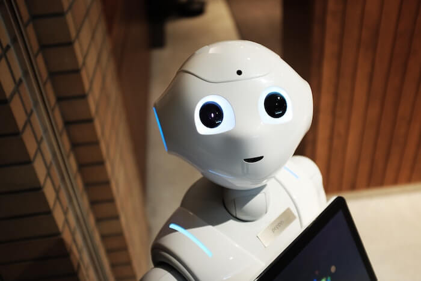
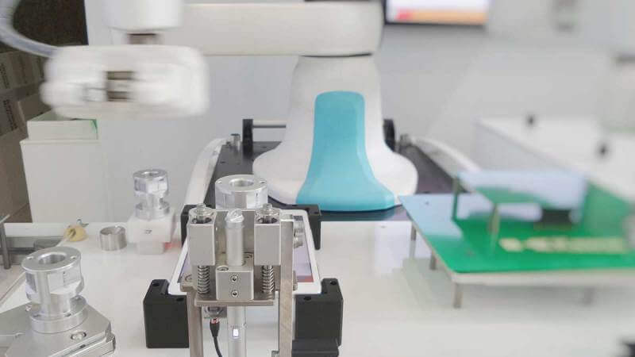

Los speakers de Digital Summit 2020 nos revelarán las claves de la
conciliación entre tecnología, beneficio y sociedad
Digital Summit 2020 de Magical Startups tendrá foco en tecnologías
disruptivas para el bien social
Digital Summit 2020 contará con las ponencias de destacados exponentes. Entre ellos,
Mona Sloan, socióloga experta en Inteligencia Artificial y Ética, y Profesora Adjunta
y miembro del Instituto de Conocimiento Público (IPK) de la Universidad de Nueva York
(NYU); Jeremy Hull, Vicepresidente de Innovación de iProspect, agencia de marketing
global con foco en el comportamiento del consumidor, que impulsa el rendimiento digital
de algunas de las marcas más relavantes del mundo; Karim Pichara, Co-fundador y CTO de
NotCo, startup chilena líder en foodtech, que reinventa los alimentos de origen animal
utilizando solo plantas; y Gabriel Monroy, cofundador de Colektia, plataforma que optimiza
la gestión de la cobranza e interacciones masivas basada en Inteligencia Artificial, e
Iván Vera, Fundador y Director de Magical Startups. En tanto, Agustín Feuerhake, Cofundador
de Buda y Fintual, será el moderador del evento.
Ir aquí para ver más...
La identificación digital les dirá adiós a las contraseñas
Usted probablemente ya ha hecho clic en el hipervínculo “olvidé mi contraseña” muchas veces. Pero
las industrias empezaron a pensar en ese problema y pasaron a implementar medios secundarios de
identificación y, en algunos casos, a sustituir todas las contraseñas.
Este procedimiento es la forma universal de autenticación de usuarios, ya que no requieren ningún
equipo específico y proporcionan un nivel de seguridad que solo el usuario puede desbloquear. Pero
paradójicamente, la contraseña se convirtió en una víctima de su propio éxito. En vez de ser el
último secreto que nos protege, las contraseñas se han convertido en una molestia.
“Para el 2020, los usuarios podrán tener hasta 200 contraseñas cada uno, llevando a muchos a adoptar
hábitos de riesgo, como usar la misma contraseña para varios sitios (el 80% de los millennials usan
la misma contraseña para todas las cuentas) o crear contraseñas excesivamente simplificadas y fáciles
de hackear. Estos hábitos hacen que nuestras contraseñas sean inútiles. Además, los defraudadores
continuamente inventan nuevas maneras de robar información personal”, así lo manifiesta Mikael Breton,
Gerente de la Solución Mobile ID, Unidad de Negocios de Operadores de Redes Móviles de Idemia.
Ir aquí para ver más...
Inteligencia Artificial

La Inteligencia Artificial avanzó tanto que será clave en el funcionamiento de las industrias.
Más que una tendencia de ingeniería de software, la IA es un bastión de la fortaleza tecnológica
actual.
Desde hace tiempo es posible observar cómo la Inteligencia Artificial funciona mediante chatbots
y soluciones analíticas prescriptivas.
Cada día, más y más productos manejarán gran cantidad de datos que la IA ayudará a sintetizar.
Ir aquí para ver más...
Mejora de la movilidad e infraestructuras más inteligentes en las Smart Cities
Aprovechando el potencial de la computación en la nube, el IoT y la inteligencia artificial se mejora
la infraestructura urbana. También se perfecciona la atención ciudadana y a los servicios de seguridad,
haciéndolos más eficientes.
Proyectos basados en Azure Digital Twins de Microsoft, que incluyen computación en la nube, inteligencia
artificial e IoT conectan personas, lugares y dispositivos.
Las soluciones que se desarrollan incorporan innovaciones basadas en transformación digital para abordar
problemas comunes.
Un ejemplo en busca de crear ciudades inteligentes y con mejor calidad de vida es el Smart City Expo World Congress.
Ir aqui para ver más...
Biotecnología, nanobots y nuevos productos

Sectores como alimentación, medicina, generación de energía y seguridad son algunos de los sectores que se
benefician de la creación de nuevos productos y de la biotecnología.
Tejidos auto-limpiantes y órganos artificiales impresos en 3D son ejemplos concretos de los beneficios de
los nuevos productos. También están los tejidos capaces de replicarse y sanar más rápido, y las pinturas
que ahorran energía.
Los sistemas electrónicos también se favorecen mediante el uso de nanoelementos que incrementan la velocidad
de los dispositivos. Sin duda, otro beneficio de estas tecnologías con el ahorro energético y el aumento de
la capacidad computacional.
Ir aqui para ver más...